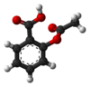

aspirin

Has synonym(s): acetylsalicylic-acid, asa
Definition: Aspirin, also known as acetylsalicylic acid (ASA), is a nonsteroidal anti-inflammatory drug (NSAID) used to reduce pain, fever, and/or inflammation, and as an antithrombotic. Specific inflammatory conditions which aspirin is used to treat include Kawasaki disease, pericarditis, and rheumatic fever.Aspirin is also used long-term to help prevent further heart attacks, ischaemic strokes, and blood clots in people at high risk. For pain or fever, effects typically begin within 30 minutes. Aspirin works similarly to other NSAIDs but also suppresses the normal functioning of platelets.One common adverse effect is an upset stomach. More significant side effects include stomach ulcers, stomach bleeding, and worsening asthma. Bleeding risk is greater among those who are older, drink alcohol, take other NSAIDs, or are on other blood thinners. Aspirin is not recommended in the last part of pregnancy. It is not generally recommended in children with infections because of the risk of Reye syndrome. High doses may result in ringing in the ears.A precursor to aspirin found in the bark of the willow tree (genus Salix) has been used for its health effects for at least 2,400 years. In 1853, chemist Charles Frédéric Gerhardt treated the medicine sodium salicylate with acetyl chloride to produce acetylsalicylic acid for the first time. Over the next 50 years, other chemists established the chemical structure and devised more efficient production methods.: 69–75 Aspirin is available without medical prescription as a proprietary or generic medication in most jurisdictions. It is one of the most widely used medications globally, with an estimated 40,000 tonnes (44,000 tons) (50 to 120 billion pills) consumed each year, and is on the World Health Organization's List of Essential Medicines. In 2020, it was the 36th most commonly prescribed medication in the United States, with more than 17 million prescriptions.
Source: Wikipedia
Wikipedia Page (Something wrong with this association? Let us know.)
Wikidata Page (Something wrong with this association? Let us know.)